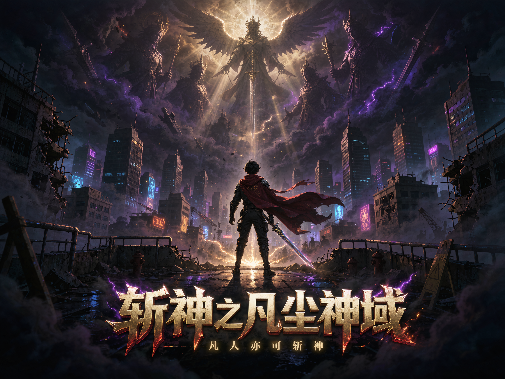

改编自三九音域现象级小说《我在精神病院学斩神》。迷雾降临，神明复苏， 失明少年林七夜觉醒诸神之力，从炽天使构筑的虚假城市中走出，加入守夜人， 带领伙伴一路斩神，从「守小家」成长为「守国家」。

这是一个人类统治、神明潜伏的时代：百年前迷雾降临，旧神复苏，而大夏，成为全球仅存的文明孤岛。
百年前，南极涌现诡异迷雾并席卷全球，被迷雾吞没的国家音讯全无。唯有迷雾在大夏国境线前停下，大夏成为世间仅存的安宁之地，却也因此成为众神觊觎的目标。
南极 · 雾临各国神话中的神明与怪物陆续现世：炽天使米迦勒、冥王哈迪斯、海神波塞冬……怪物袭击人类，神明则选择「神明代理人」，赐予凡人超凡神力。而属于大夏的神明，却不知所踪。
米迦勒 · 倪克斯 · 波塞冬少数人觉醒的超凡能力被称为「禁墟」，如凡尘神域、玫火羽裳、黑王、重生等；而蕴含毁灭性力量的古代禁忌之物则称「禁物」，如灭世级的【湿婆怨】，足以抹杀一座城市。
禁墟序列 · 禁物编号大夏官方抗神机构，肩负守护人类、对抗神明与「神秘」的重任，下设各地编号小队（如沧南 136 小队）。另有诸神精神病院——主角林七夜的秘境，可治愈精神崩溃的神明，借取众神之力。
136 小队 · 夜幕小队从沧南市 136 小队的初出茅庐，到西方诸神入侵的沧南神战——两季 30 集，一段凡人弑神的史诗。
守夜人、神明、卧底与宿敌——两季 30 集登场的主要人物全面档案。
7 岁与炽天使米迦勒对视失明十年，觉醒后开启诸神精神病院。在赵空城引领下加入守夜人，立誓守夜十年。曾以神力重塑被抹杀的沧南市，与已死的市民在奇迹中生活十年。带领夜幕小队喊出「大夏境内，神明禁行」，一步步从守小家到守国家。
林七夜的领路人与精神支柱。老城区大战中独自力战鬼面王，功勋被林七夜让渡，最终重创牺牲。他的牺牲催生了林七夜「替赵空城守夜十年」的誓言，是无数观众心中最大的意难平。
实力堪比克莱因境的强大守夜人，曾与绍平歌并称「黑白双煞」。十年前已死，活在林七夜创造的奇迹沧南中，十年间以阎罗殿气息镇压禁物【湿婆怨】。第二季神战中解开封印阻拦冰霜巨人，守护真相曝光。
巾帼不让须眉的主力战力。手持红缨枪可产生强大火焰焚烧神秘，动漫中刻画得飒爽惊艳，兼具女性的柔美与力量。目睹队友一个个离去，依旧坚守沧南。
前「蓝雨」小队队员，不死剑者。拥有太阳本源与重生禁墟，可多次复生。沧南一战后被召回总部研究高天原的秘密，为消灭须佐之男而战。
10 岁被诡计之神洛基选中，潜伏守夜人多年。18 岁参与沧南大劫，后潜伏北欧神国阿斯加德，布局毒杀洛基并继承其神位，成为新一任诡计之神，创立【隐神】组织——深藏不露的布局者。
沧南市 136 小队成员之一，与队友共同守护沧南、抵御神秘入侵。
冷静理智的天才，林七夜最重要的智囊伙伴。高中时与林七夜联手解决难陀蛇妖，此后独自在下水道解剖「神秘」一年，被守夜人通缉。擅长情报推演与布局谋划，真相身份扑朔迷离。
百里世家最受宠的小太爷，见人就送劳力士的土豪公子哥，被誉为「斩神中的哆啦A梦」。体术几乎为零但法宝多到离谱。第二季送出祖传至宝回天玉护住沈青竹残魂，见证 136 小队以命换命的羁绊。
战力爆表，一旦暴走连队友都砍。幼年时禁墟黑王暴走屠了自家满门，从小被当作灾厄：蹲过监狱、当过和尚，自称背着 333 条人命。历经磨难驯服黑王，成为林七夜最忠诚的战友。
集训营中仅次于林七夜的天才，也是夜幕小队中最特殊的一个。第二季以「寂灭天使」身份潜伏古神教会，承受邪神侵蚀与当众拷问，上演苦肉计掩护队友，最终与林七夜公开接头，是贯穿全季的暗线英雄。
沉睡于酆都天宫古棺中的少女，与林七夜命运深度绑定，跨越轮回的羁绊。肉身强悍无匹，单恋林七夜，是夜幕小队不可或缺的战力。
挑战各地区守夜人队伍时相遇的 008 小队唯一幸存者，背负同伴遗志加入夜幕小队，共同征战诸神。
希腊神话中的原始黑夜女神。认林七夜为亡子达纳都斯，视如亲儿子，赠予黑夜本源。第二季沧南神战中，林七夜彻底驾驭其权能正面击退神明，是全书最强的辅助神明。
林七夜童年因与他对视而失明十年，也因他而觉醒神力。以神力构建虚假的沧南城让林七夜生活十年，是林七夜命运的起点与第一位神明契约者。
诸神精神病院中陷入自闭的斗战胜佛。承诺百里之内护林七夜周全，是林七夜最可靠的神明后盾之一。
诸神精神病院的其余四位神明病友：大法师梅林、英雄王吉尔伽美什、诗神布拉基与青春女神伊登，全程助力主角，构成林七夜纵横神域的「神级外挂团」。
擅长欺骗与布局的北欧诡计之神，前期核心反派，制造沧南大劫推动主线。第二季末道出「沧南只是凡尘神域幻境」的惊天真相，其话语成为全剧最大反转的引信。
第二季率大批神明仆从围攻沧南的西方主神之一。沧南神战中其麾下神将兵临城下，被彻底驾驭黑夜权能的林七夜正面击退。
西方神明入侵大夏的先遣组织。长老呓语神魂入侵诸神精神病院反被反杀；吕良催动漫天黑藤封锁全城，以献祭大阵抽取全城生灵能量，企图唤醒灭世禁物【湿婆怨】。沈青竹便潜伏于此。
全书终极 BOSS，克苏鲁神话中的混沌本源与外神之首。迷雾与诸神异变的深层源头，是林七夜与夜幕小队最终将要直面的大恐怖。
以林七夜为轴心——守夜人、神明、队友与宿敌，构成这张斩神世界的羁绊网络。